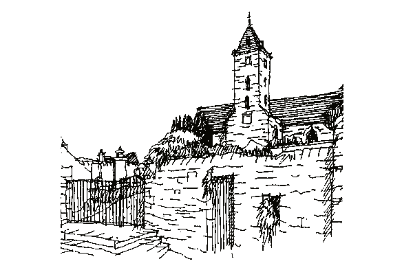

How You Can Help
Whilst any Donations of Funds to the ‘Auld Kirk Charitable Trust’ will of course be welcomed, we would also be pleased to hear from anyone interested in helping the Committee with their work, or coming forward with ideas and information on New or Re-Formed Clubs or Groups who would like to use the facilities on offer on a regular basis or who would identify with casual use as a ‘Meeting Place’. Please let us know of any ideas you have. If you feel that any sort of Educational or Training facilities would be useful then we would be pleased to research the possibilities on your behalf.
In order to register your further interest of assistance or suggestions feel free to contact any of the following committee members (or any member of the Tayport Community Council):
Chairperson: Dr C. R. Barker
The Old Manse, Queen Street, Tayport, DD6 9NS
Tel. 01382-553701
Secretary:
Treasurer: Mr J. Kinnear
Craigwhinnie, Cupar Road, Tayport, DD6 9PB
Tel. 01382-552541 (day)
Tel. 01382-553248
Admin Officer:
